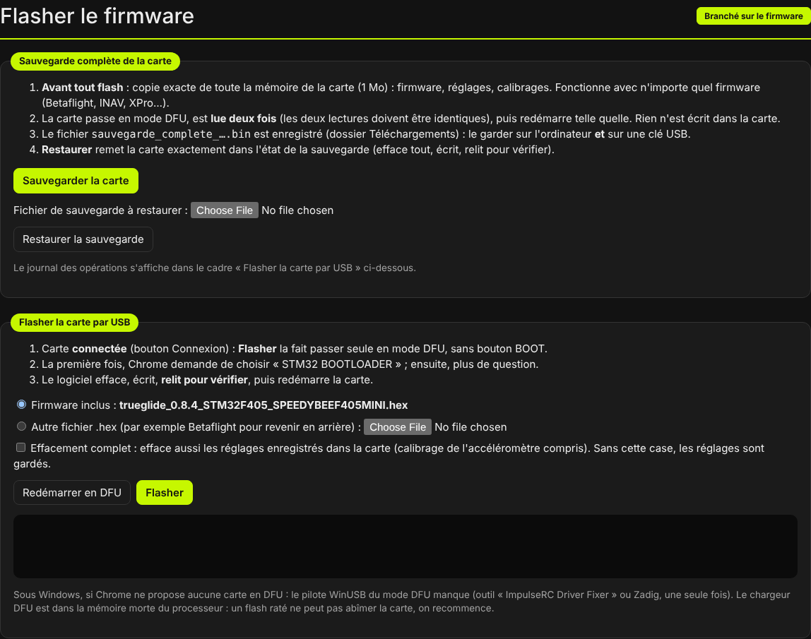
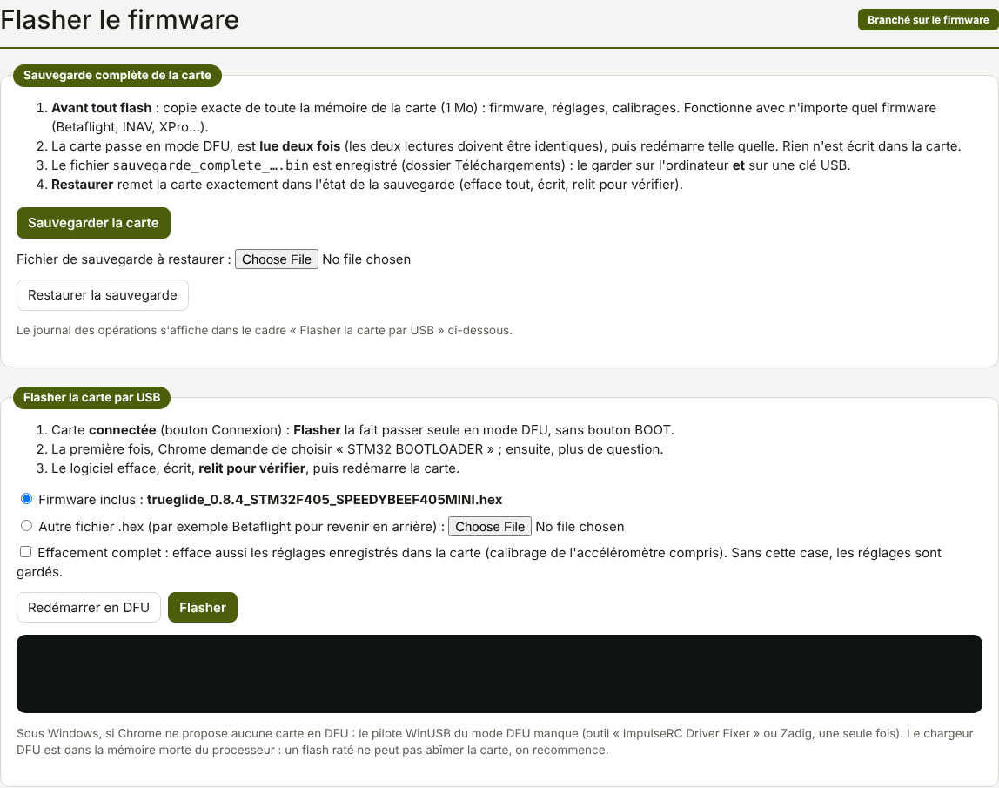

Flasher le firmware
L'onglet Flasher le firmware écrit XPro dans la carte, ou un autre firmware pour revenir en arrière. Il fait aussi la sauvegarde complète de la carte et sa restauration. Tout passe par l'USB, dans Chrome ou Edge sur ordinateur, sans autre programme.


trueglide_0.8.6_STM32F405_SPEEDYBEEF405MINI.hex), autre fichier, effacement complet, et le
journal des opérations.Le firmware inclus
Le fichier du logiciel XPro contient le firmware de sa version : son nom s'affiche à côté de « Firmware inclus ». Un nouveau fichier du logiciel apporte donc le nouveau firmware.
- Brancher la carte en USB, cliquer Connexion.
- Onglet Flasher le firmware, cadre « Flasher la carte par USB » : laisser coché Firmware inclus.
- Cliquer Flasher et confirmer. La carte passe seule en mode DFU, sans bouton BOOT.
- Le logiciel efface, écrit, relit pour vérifier, puis redémarre la carte. Le journal suit chaque étape.
- Si la carte ne revient pas seule : débrancher et rebrancher l'USB, puis Connexion.
Sans la case Effacement complet, les réglages enregistrés dans la carte sont gardés : seul le programme est effacé et réécrit. Lors des essais de KarRmen, le flash de la 0.8.3 a effacé 4 secteurs, avec une écriture et une vérification à 100 %.
La case Effacement complet efface aussi les réglages, calibrage de l'accéléromètre compris.
Un autre fichier .hex
Choisir « Autre fichier .hex » et le fichier, puis Flasher. Si le fichier est un XPro plus ancien que le firmware inclus, le logiciel demande une confirmation.
Revenir à Betaflight : flasher le .hex Betaflight de la carte avec Effacement complet,
puis recoller son dump all dans la ligne de commande de Betaflight. Pour retrouver la carte
exactement comme avant, réglages et calibrages compris, la restauration est plus
simple.
.hex et le logiciel XPro laissent les réglages intacts. Le .bin du
firmware, écrit par un autre outil, couvre aussi la place des réglages : il les efface.Passage en mode DFU
Le mode DFU est le chargeur intégré au processeur. Il est en mémoire morte : un flash raté ne peut pas abîmer la carte, on recommence. Le logiciel y fait entrer la carte de plusieurs façons :
| La carte a… | Ce que fait le logiciel |
|---|---|
| XPro, connectée | Envoie bl dans sa ligne de commande : la carte redémarre en DFU. |
| Betaflight ou INAV, connectée | Envoie la demande publique « redémarrer dans le chargeur » (MSP),
puis, si la carte est toujours là, ouvre sa ligne de commande et envoie bl. Le journal dit ce que
la carte a répondu. Sur KarRmen sous Betaflight, la demande MSP a suffi. |
| ArduPilot | Rien : la carte ne passe pas seule en DFU. Utiliser le bouton BOOT. |
| Aucune réponse | Message « La carte n'est pas passée en DFU » : utiliser le bouton BOOT. |
Bouton BOOT : débrancher la carte, maintenir son bouton BOOT en branchant l'USB, puis cliquer Flasher sans cliquer Connexion. Chrome propose alors la carte en mode DFU.
Le bouton Redémarrer en DFU fait seulement passer la carte connectée en mode DFU, sans flasher.
Autoriser la carte DFU dans Chrome
Chrome ne donne accès à un appareil USB qu'après un choix de l'utilisateur. La première fois, il demande de choisir « STM32 BOOTLOADER » ; ensuite, il ne pose plus la question.
Quand la carte passe en DFU après le clic sur Flasher et que Chrome ne l'a encore jamais autorisée, le journal dit « Carte DFU pas encore autorisée dans Chrome » et le bouton Autoriser la carte DFU apparaît : cliquer dessus, choisir « STM32 BOOTLOADER », et le flash continue. Sur KarRmen, il a fallu le faire une fois, au flash de la 0.5.1.
Si Chrome ne propose aucune carte, elle n'est pas en DFU : bouton BOOT. Sous Windows, si Chrome ne propose toujours rien, le pilote WinUSB du mode DFU manque : l'installer une fois avec « ImpulseRC Driver Fixer » ou Zadig.
Sauvegarde complète
À faire avant tout flash, surtout le premier. Elle marche avec n'importe quel firmware (Betaflight, INAV, XPro…).
- Cliquer Sauvegarder la carte et confirmer. La carte passe en DFU comme pour un flash.
- Le logiciel lit toute la mémoire (1 Mo) deux fois. Si les deux lectures diffèrent, la sauvegarde est refusée : recommencer avec un autre câble ou un autre port USB.
- Le fichier
sauvegarde_complete_firmware_date-heure.binest enregistré dans le dossier Téléchargements. Le journal donne le firmware reconnu, la taille (1 048 576 octets), « deux lectures identiques » et l'empreinte SHA-256. - La carte redémarre telle quelle : rien n'a été écrit.
Garder le fichier sur l'ordinateur et sur une clé USB. Pour vérifier plus tard qu'il est intact, sous
Windows : certutil -hashfile sauvegarde_complete_….bin SHA256. Le résultat doit être identique à
l'empreinte notée. Celle de KarRmen, faite le 14/10/2026 et contrôlée ainsi le 18/10, n'avait pas changé.
Restauration
- « Fichier de sauvegarde à restaurer » : choisir le fichier
.bin. - Cliquer Restaurer la sauvegarde. Le logiciel vérifie le fichier (1 Mo, début d'un firmware STM32F405) et affiche son empreinte SHA-256 : la comparer à celle notée à la sauvegarde.
- Confirmer. Tout le contenu actuel de la carte est effacé, la sauvegarde est écrite puis relue.
- La carte redémarre dans l'état de la sauvegarde. Si besoin, débrancher et rebrancher l'USB.
Après une restauration de Betaflight, puis un nouveau flash de XPro, les réglages XPro ont disparu :
status affiche « ENREGISTREMENT ILLISIBLE » et XPro repart de ses défauts. Recoller ses réglages et
refaire le calibrage de l'accéléromètre (voir Mise en route).